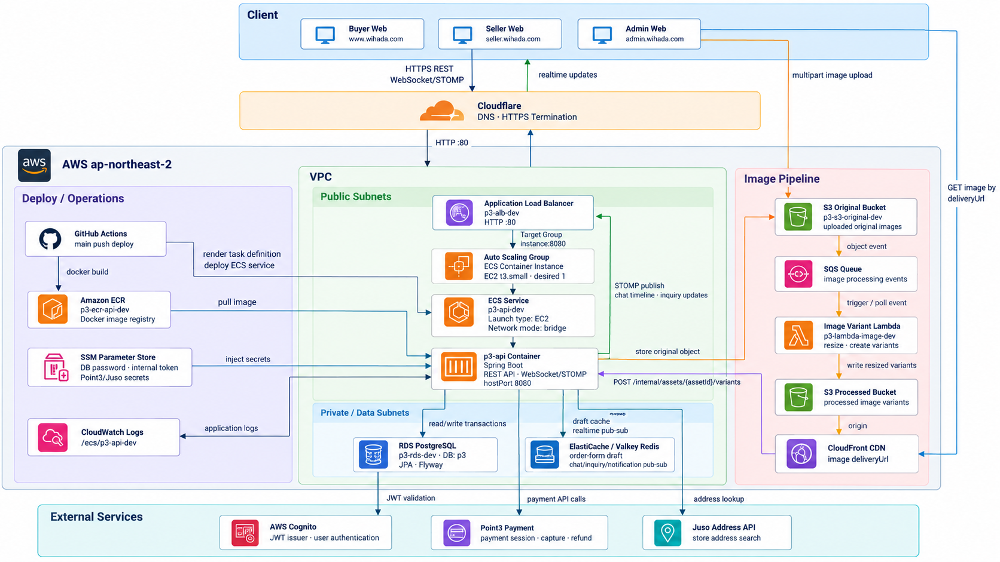

04
System Architecture

Request & Data
구매자·판매자·관리자 웹 요청은 Cloudflare에서 DNS와 외부 HTTPS를 처리한 뒤 ALB와 ECS on EC2의 Spring Boot API로 전달됩니다. 핵심 업무 데이터와 주문 상태는 RDS PostgreSQL에 저장합니다.
Realtime
ElastiCache Valkey Redis는 주문서 초안 캐시와 여러 애플리케이션 인스턴스 사이의 채팅·타임라인·문의 목록 이벤트 전달에 사용합니다.
Asset Pipeline
원본 이미지는 S3에 저장하고 SQS와 Lambda로 variant를 비동기 생성합니다. 처리 결과는 내부 API로 통지하고 CloudFront의 deliveryUrl을 통해 제공합니다.
External & Delivery
Cognito가 인증과 JWT 발급을, Point3가 결제 세션·승인·환불을 담당합니다. GitHub Actions는 ECR 이미지와 ECS 서비스를 갱신하며 Secret은 SSM Parameter Store에서 주입합니다.
외부 사용자는 HTTPS로 접근하지만 현재 Cloudflare와 ALB 사이 origin 구간은 HTTP입니다. 따라서 end-to-end TLS 구조로 표현하지 않았습니다.